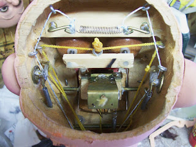

Shop Talk
7/25/2011
You have met "Otis" before. He is the figure I custom built for Pam Sterner some 35 years ago.

He spent the last week or so with me for a mechanical tuneup and repainting. ("Before" photo at left; "after" above.) His eyebrows were tattered so I decided to replace with new if I had a scrap of orange fur from which I could make the new eyebrows. Well guess what - when I checked my fur scrap bin I found the original piece of fur remaining from when I made his wig over three decades ago! A perfect match! Which goes to prove a couple things:
1) My Mother was right when she advised a person should not be too hasty to discard things because one never knows when they might be needed in the future. . . . and,
2) There must not have been a great demand over the years for figures with orange hair!
(Someone asked for a closer look at Otis' mechanics. See below.)
{kind=link}

He spent the last week or so with me for a mechanical tuneup and repainting. ("Before" photo at left; "after" above.) His eyebrows were tattered so I decided to replace with new if I had a scrap of orange fur from which I could make the new eyebrows. Well guess what - when I checked my fur scrap bin I found the original piece of fur remaining from when I made his wig over three decades ago! A perfect match! Which goes to prove a couple things:
1) My Mother was right when she advised a person should not be too hasty to discard things because one never knows when they might be needed in the future. . . . and,
2) There must not have been a great demand over the years for figures with orange hair!
(Someone asked for a closer look at Otis' mechanics. See below.)
{kind=link}
